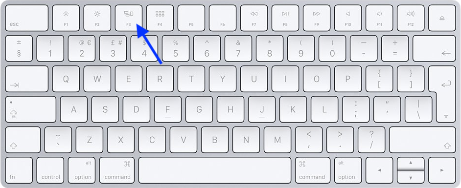
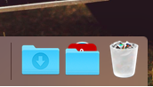
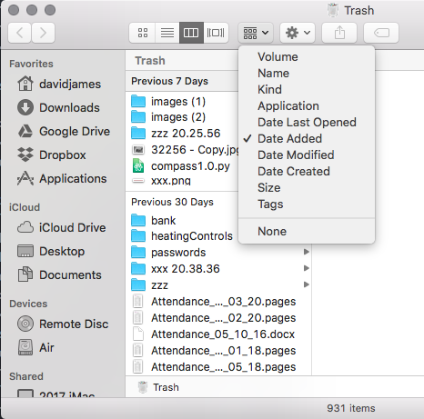
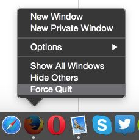
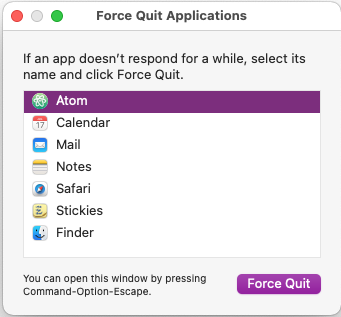

There are a number of things that can happen on the iMac or MacBook that prevent you from doing what you want. Most are easily resolved, if you know what to do. So these notes try to cover the more usual problems.
You have several applications open on the screen and suddenly the one you are using disappears! This is probably because you have inadvertently clicked on another application window, which has brought that one to the front and the window you want is hiding behind it. Remember that to do anything in an application it must have the 'focus'. In other words, you must have clicked in it somewhere so that you can then enter text, scroll parts of it, click a button or use a menu.
You could minimise the window (click the yellow button in the top left corner of the window) that is now at the front or you can press the F3 key, known as the 'Open Mission Control' key. This will spread out the various application windows so that you can see them all. If you then click on the one you want to use it will be brought to the front and you can continue using it.
There are a couple of ways that you can delete a file or a folder. You can drag it from the Desktop or from Finder to the waste paper basket on the right-hand side of the Dock or you can hold down the control key and click on the file or folder (again either on the Desktop or in Finder) and select 'Move to Trash'. It is also possible to do either of these accidentally. So as well as realising later that you deleted something earlier (deliberately), but shouldn't have, you can do it by mistake.
Luckily, all is not lost. The waste basket (aka Trash) is really just another folder, although it is hidden and normally only accessed by clicking on the waste basket icon. If you do that then Finder opens, showing the contents of the Trash. The folders and files might be listed in alphabetical order, which is fine if you know the name of the file or folder that you want to retrieve, but an easier way to find things is to select a different way of listing the folders and files. Click on the 'arrangement' button on the Finder toolbar and select the 'Date Added' option. This will then list files added to the Trash in the last 7 days, 30 days, month and year.
Deleted items stay in the Trash indefinitely (until the Trash is emptied) or for the next 30 days if that option has been set.
Occasionally some 'bug' in the application's code causes the application to freeze. It stops accepting keyboard entry or mouse clicks and my turn the cursor into a rotating coloured wheel when it is moved on to the application's window. The only way of getting out of this is to force the application to quit. Using the menu option to quit usually doesn't work, but the application icon will be on the Dock (at the bottom of the screen) and you can use this. Hold down the Control key (bottom left of keyboard) and click on the application's icon on the Dock. You should see a small pop-up menu similar to this and you can click 'Force Quit'. Then just restart the application and hopefully all will be well, although you may have lost any changes you made since last saving a file.
If 'Force Quit' via the Dock doesn't work then you can try clicking on the Apple menu and select Force Quit... to open a small window that lets you select the application and then force it to quit.
If the application hasn't frozen, but it is not behaving properly, you can try restarting it. Quit it from the menu and start it again, either from the Dock or from the Applications list.
Very occasionally the whole system freezes and there is really nothing that can be done apart from restarting it. To force any computer to stop you need to hold down the power button for about five seconds. The power button on the iMac is on the back of the screen at the bottom left (if you are looking at the screen). Once it has been turned off then simply press the power button again, holding it down until the iMac makes a sound. The system should then start up.
The Mac operating system is, I think, better than most. However, it can accumulate data that slows it down. So it is worthwhile restarting it now and again. Simply click on the Apple menu and select Restart.
© David James 2021 Last updated: 15th February 2021